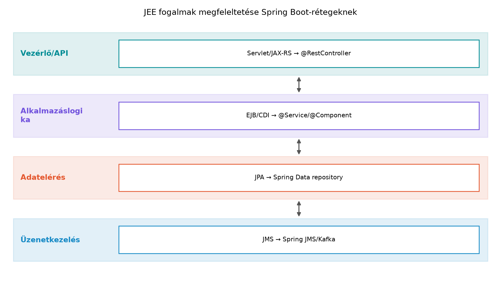

A Az IoT-backend felépítése: ingest, tárolás, API, alkalmazások alfejezetben áttekintettük a TerraSense backend rétegeit. A ts-backendet Spring Bootban készítjük el, de az olvasó eddig főleg a Jakarta EE (korábbi nevén Java Platform, Enterprise Edition, JEE) fogalmaival találkozott: servlet, EJB, JPA, JMS. Ezek a fogalmak hasznosak, mert a Spring Boot ugyanazokat a problémákat oldja meg, csak eltérő, modernebb eszközökkel. Ebben az alfejezetben felépítjük a fogalmi hidat, és közben a szükséges Java-minimumot is átadjuk C++-os szemmel, hogy a ts-backend kódját ne kelljen „vakon” olvasni.
Először tisztázzuk a két világ viszonyát. A Jakarta
EE szabványosított specifikációk gyűjteménye: servlet, JAX-RS,
EJB, CDI, JPA, JMS. Egy Jakarta EE alkalmazás hagyományosan
alkalmazásszerveren fut (például WildFly, Payara), amely a szabványos
szolgáltatásokat – tranzakció, üzenetkezelés, adatelérés – biztosítja.
Ezzel szemben a Spring Boot egy keretrendszer, amely a
Spring-projekt konvencióira épít. Nem egy külső alkalmazásszervert
igényel, hanem a szervert beágyazza a futtatható JAR-ba: a
spring-boot-starter-web például egy beágyazott Tomcatet
indít.
Definíció. A Spring Boot olyan Java-keretrendszer, amely a Spring-ökoszisztémát előre konfigurált indítókkal, beágyazott webkiszolgálóval és „futtatható JAR” csomagolással teszi használhatóvá. A Spring-bean pedig egy olyan objektum, amelynek életciklusát a Spring-konténer kezeli: példányosítja, függőségekkel ellátja, és szükség szerint felszabadítja.
Az alábbi ábra a JEE-komponensek és a Spring Boot komponensek megfeleltetését foglalja össze rétegenként.

A rétegekhez tartozó fogalmak:
@RestController osztály metódusai @GetMapping,
@PostMapping stb. annotációval közvetlenül REST-végpontokat
adnak. A HTTP-konverzió (JSON stb.) automatikus.@Service és a általánosabb
@Component annotációjú osztályok a bean-ek; a tranzakciót
@Transactional jelöli.findByNodeId(String nodeId) metódusból a keretrendszer
lekérdezést generál.JmsTemplate-et vagy magasabb szintű
@KafkaListener-t kínál; az IoT-ban gyakran Kafka vagy MQTT
az üzenethordozó.Dependency injection és inversion of control. A kulcsfogalom a IoC (Inversion of Control, a vezérlés megfordítása): a komponens nem maga hozza létre a függőségeit, hanem kívülről kapja. Spring Bootban ezt a DI (Dependency Injection, függőség-injektálás) valósítja meg. C++-os analógiaként képzeljük el a konstruktorinjektálást:
// C++: a függőséget a konstruktor paraméterként kapja, a hívó hozza létre
auto repo = std::make_shared<NodeStateRepository>();
auto service = std::make_shared<NodeStateService>(repo);
StatusController controller{service};A Spring ugyanezt deklaratívan csinálja. A bean-definíciók alapján a keretrendszer felépíti az objektumgráfot, és a konstruktorba injektálja a szükséges példányokat. C++-ban ezt a hívást gyakran egy kompozíciós gyökér (composition root) végzi; Spring Bootban a konténer tölti be ezt a szerepet.
A TerraSense háttérrendszeréhez Spring Bootot választottunk, de a döntést így is érdemes megindokolni.
| Szempont | Jakarta EE | Spring Boot |
|---|---|---|
| Szabványosság | Erős, specifikáció-alapú | De facto szabvány, de nem formális |
| Alkalmazásszerver | Külső szerver szükséges | Beágyazott Tomcat, futtatható JAR |
| Fejlesztési sebesség | Kissé nehézkes, XML/annotációk vegyesen | Gyors, konvenció a konfiguráció fölött |
| IoT-mikroszolgáltatás | Túlsúlyos lehet | Karcsú, konténerbarát |
| Tanulási görbe | Java-EE ismeret kell | Spring-ismeret kell, de kevesebb „üzemeltetési” ismeret |
| Enterprise környezet | Gyakran nagyvállalati standard | Szintén elterjedt, cloud-native |
A TerraSense esetében a ts-backend konténerben fut, REST API-t és MQTT-ingestet valósít meg. Erre a Spring Boot a beágyazott szerverrel, a Spring Data-val és az MQTT-kliens-integrációval jó választás.
Készítsünk egy egyszerű, de a TerraSense fogalmait használó Spring
Boot példát. A cél egy GET /api/nodes/{nodeId}/status
végpont, amely egy csomópont legutóbbi állapotát adja vissza. Az alábbi
kód a Spring Boot fogalmi rétegeit mutatja.
1. A telemetriastátusz record. A Java 16-tól
elérhető record egy immutable adattartó, nagyjából olyan,
mint egy C++-os struct, amelynek minden tagja
const, és a konstruktor a paraméterlistából generálódik. A
JSON-szerializációhoz használhatjuk közvetlenül.
package com.terrasense.backend;
public record NodeStatus(
String nodeId,
long seq,
double temperatureC,
boolean irrigationValveOpen
) {}2. A szolgáltatás- vagy üzleti logika. A
@Service annotáció jelzi a Springnek, hogy ebből az
osztályból bean-t hozzon létre. A DI-t itt konstruktorinjektálással
kapja; ebben a példában még nem függ külső komponenstől, de a laterális
kódban ez lesz a belépési pont.
package com.terrasense.backend;
import org.springframework.stereotype.Service;
@Service
public class NodeStateService {
public NodeStatus latestFor(String nodeId) {
// A valódi implementáció az idősoros adatbázisból olvas.
// Itt csak a kontraktust mutatjuk; a 13. fejezetben TimescaleDB-ből dolgozik.
// A példa kedvéért egy rögzített állapotot adunk vissza.
return new NodeStatus(nodeId, 42, 22.5, false);
}
}3. A REST-vezérlő. A @RestController a
HTTP-réteget képviseli. A @GetMapping az URL-re köti a
metódust. A NodeStateService-t a konstruktorban kapja, így
a Spring létrehozza a függőségi láncot.
package com.terrasense.backend;
import org.springframework.web.bind.annotation.GetMapping;
import org.springframework.web.bind.annotation.PathVariable;
import org.springframework.web.bind.annotation.RestController;
@RestController
public class StatusController {
private final NodeStateService nodeStateService;
public StatusController(NodeStateService nodeStateService) {
this.nodeStateService = nodeStateService;
}
@GetMapping("/api/nodes/{nodeId}/status")
public NodeStatus status(@PathVariable String nodeId) {
return nodeStateService.latestFor(nodeId);
}
}A C++-os olvasónak ez a kód a következőt jelenti: a Spring Boot
elindul, létrehoz egy NodeStateService példányt (bean),
majd egy StatusController példányt, és a
StatusController konstruktorába injektálja a
NodeStateService referenciát. Ezt a kapcsolatot a
@Service és a @RestController annotációk írják
le. A @GetMapping metódus hívása olyan, mintha a
HTTP-keretrendszer a megfelelő URL hívásakor meghívná a C++-os vezérlő
metódusát.
Továbbvitt eredmény. Ez a Spring-fogalmi alap – a
bean-ek, a DI, a @RestController/@Service
páros és a NodeStatus record – közvetlenül megalapozza az
A ts-backend váza: REST API és
egészségellenőrzés alfejezetet, ahol a StatusController
és a NodeStateService már valós, a ts-backend projektbe
szervezett komponensekké válnak. Ugyanezt a DI-mintát és a bean-modellt
használja majd az Ingest: MQTT-ből a backendbe,
idempotensen alfejezet MQTT-kliens komponense, valamint az Parancsok és konfiguráció lefelé: kézbesítés,
nyugtázás, időkorlát alfejezet parancskezelője is.
A Spring Boot kód olvasásához néhány alapvető Java-fogalmat érdemes rögzíteni.
GC vs. RAII. C++-ban az objektum destruktora
determinisztikus: a hatókör elhagyásakor fut. Javában nincs destruktor;
a szemétgyűjtő (garbage collector, GC) bármikor felszabadíthatja a nem
használt objektumokat, de ez nem garantált időpont. A determinisztikus
erőforrás-felszabadításhoz a Java 7-ben bevezetett
try-with-resources szolgál: az
AutoCloseable interfészt megvalósító objektumot a
try blokk erőforrás-deklarációjában létrehozva a blokk
végén a close() automatikusan hívódik, hasonlóan a C++
RAII-hoz, de csak lexikális hatókörhöz kötötten.
try (var client = new MqttClient("tcp://localhost:1883", "ts-backend")) {
client.connect();
// ... publish / subscribe műveletek
} // A client.close() itt automatikusan meghívódikKivételek. A Javában kétféle kivétel van:
ellenőrzött (checked) és nem ellenőrzött
(unchecked). Az előbbit a metódus szignatúrájában deklarálni
kell (throws IOException), az utóbbit nem. C++-ban nincs
ilyen megkülönböztetés; a noexcept specifikáció a Java
throws-hoz hasonló, de nem azonos szerepet tölt be. A
Spring Boot általában unchecked kivételeket használ, a checked
kivételeket gyakran becsomagolja.
Record. A fenti NodeStatus példa
mutatja: a record egy immutable adatosztály, amely a
konstruktorból automatikusan létrehozza a mezőket, az
equals, hashCode és toString
metódusokat. C++-os szemmel ez egy const tagokból álló
struct, amelynek nincs settere, és a tagjait a
konstruktorban kell megadni.
Változóinferencia. A lokális változók típusa a
var kulcsszóval elhagyható, a fordító a jobb oldalból
következtet. Ez a C++11 auto megfelelője.
A Spring Boot projekt standard buildeszköze a Maven. A
pom.xml a projekt objektummodellje, nagyjából a C++
CMakeLists.txt-hez hasonló szerepű: függőségek,
build-lépések, profilok. Egy minimális pom.xml a
ts-backendhez:
<?xml version="1.0" encoding="UTF-8"?>
<project xmlns="http://maven.apache.org/POM/4.0.0"
xmlns:xsi="http://www.w3.org/2001/XMLSchema-instance"
xsi:schemaLocation="http://maven.apache.org/POM/4.0.0
https://maven.apache.org/xsd/maven-4.0.0.xsd">
<modelVersion>4.0.0</modelVersion>
<parent>
<groupId>org.springframework.boot</groupId>
<artifactId>spring-boot-starter-parent</artifactId>
<version>3.3.5</version>
<relativePath/>
</parent>
<groupId>com.terrasense</groupId>
<artifactId>ts-backend</artifactId>
<version>0.1.0</version>
<properties>
<java.version>21</java.version>
</properties>
<dependencies>
<dependency>
<groupId>org.springframework.boot</groupId>
<artifactId>spring-boot-starter-web</artifactId>
</dependency>
</dependencies>
<build>
<plugins>
<plugin>
<groupId>org.springframework.boot</groupId>
<artifactId>spring-boot-maven-plugin</artifactId>
</plugin>
</plugins>
</build>
<profiles>
<profile>
<id>dev</id>
<properties>
<spring.profiles.active>dev</spring.profiles.active>
</properties>
</profile>
</profiles>
</project>A futtatható JAR előállítása és futtatása:
cd ~/iot-labor/i042 # ha a forráskód itt lenne
mvn clean package
java -jar target/ts-backend-0.1.0.jarA mvn spring-boot:run fejlesztés közben gyorsabb, mert
nem igényli a csomagolást. A profil egy-egy környezet
(dev, prod, test) konfigurációját választja ki; a dev
profil például naplózást vagy adatbázis-kapcsolatot állít át. A C++
developerek a preprocessor makrók (#ifdef DEBUG) és a
build-típusok (Debug/Release) analógiájára gondolhatnak.
Egy ilyen fogalmi alfejezetben a „futtatás” inkább azt jelenti, hogy
az olvasó a fenti kódot elhelyezi egy Spring Boot projektben, majd a
curl paranccsal ellenőrzi a REST-végpontot:
curl -s http://localhost:8080/api/nodes/n001/statusA várt kimenet:
{"nodeId":"n001","seq":42,"temperatureC":22.5,"irrigationValveOpen":false}Gyakori hibatünetek:
| Tünet | Lehetséges ok | Javítás |
|---|---|---|
UnsatisfiedDependencyException |
Hiányzó @Service/@Component, vagy a
konstruktorban olyan típust várunk, amelyből nincs bean |
Adjuk meg a hiányzó annotációt, vagy hozzunk létre bean-t |
404 Not Found a curl-re |
A @RestController nincs felderítve, vagy rossz a
@GetMapping útvonal |
Ellenőrizzük a @SpringBootApplication
csomagszkennelését, és a path-t |
NoSuchBeanDefinitionException |
A konstruktorinjektálás típusa nem illik a bean-típushoz | Ellenőrizzük a csomagokat és a típusokat |
| Az alkalmazás nem indul | Portütközés vagy hiányzó függőség | --server.port=8081 vagy a pom.xml
függőségek |
A Spring naplója bőbeszédű: a bean-ek létrejöttét, a beágyazott Tomcat indulását és a hiba okát is kiírja. Érdemes a konzolt figyelni.
@Service önmagában nem varázsol; a Spring a classpath-on
lévő annotált osztályokat pásztázza, és a kontextusba regisztrálja. Ha
az osztály nincs a komponens-kereső csomag alatt, nem jön létre
bean.@Autowired mezőinjektálás kényelmes, de rejtett
függőségeket hoz létre, és nehezebben tesztelhető. C++-os analógiaként a
konstruktorinjektálás olyan, mintha a függőséget a konstruktor
const& paramétereként adnánk át, nem pedig egy globális
singletonból vennénk elő.finalize() vagy a close()
automatikusan lefut, amikor az objektumra már nincs hivatkozás. A
Javában a close() csak akkor fut, ha try-with-resources-t
használunk, vagy explicit módon hívjuk. Így a hálózati kapcsolatokat,
fájlokat, MQTT-klienseket mindig try-with-resources-ba kell tenni.record nem POJO. A
record immutable, nincs setter, és az öröklődés
korlátozott. Ha JPA-entitásként akarjuk használni, az nem megy
közvetlenül; JPA-entitáshoz osztály kell.TelemetryIngestService komponense MQTT-üzeneteket fogad be,
és idősoros adatbázisba ír. Tervezze meg a DI-alapú osztályszerkezetet:
milyen interfészt/függőséget kapjon a konstruktorban? Rajzolja le
szövegesen az objektumgráfot.TelemetryController osztállyal, amely a
POST /api/nodes/{nodeId}/telemetry végponton fogad egy
NodeTelemetry recordot. A record tartalmazza a
seq, temperatureC, humidityRh,
soilMoisturePercent mezőket. A vezérlő hívja a
TelemetryIngestService.ingest(...) metódust.Parameter 0 of constructor in com.terrasense.backend.StatusController required a bean of type 'com.terrasense.backend.NodeStateService' that could not be found.
Mi a hiba oka, és hogyan javítja?A Jakarta EE szabványokra épül, és alkalmazásszervert igényel; a
Spring Boot egy keretrendszer, amely beágyazott szerverrel, előre
konfigurált modulokkal és gyors fejlesztési ciklussal dolgozik. A
ts-backend konténerben fut, nem kell teljes Java-EE-szervert
üzemeltetni, és a Spring Data, a @RestController valamint a
Spring integrációk (MQTT, Kafka) pontosan a szükséges rétegeket fedik
le. A Spring Boot tehát egyszerűbb üzemeltetést és kevesebb
boilerplate-et ad.
A TelemetryIngestService konstruktorában egy
TelemetryRepository interfészt (vagy Spring Data
repository-t) és egy ObjectMapper-t kapjon. A DI révén a
hívó, jelen esetben a Spring-konténer adja át ezeket a függőségeket. Az
objektumgráf:
TelemetryController → TelemetryIngestService → TelemetryRepository.
Ezt a gráfot a bean-definíciók alapján a Spring építi fel, hasonlóan
ahhoz, ahogy egy C++ kompozíciós gyökér explicit módon létrehozza a
repo, majd service, majd
controller példányokat.
A kód:
package com.terrasense.backend;
public record NodeTelemetry(
long seq,
double temperatureC,
double humidityRh,
double soilMoisturePercent
) {}@RestController
public class TelemetryController {
private final TelemetryIngestService ingestService;
public TelemetryController(TelemetryIngestService ingestService) {
this.ingestService = ingestService;
}
@PostMapping("/api/nodes/{nodeId}/telemetry")
public void ingest(@PathVariable String nodeId,
@RequestBody NodeTelemetry telemetry) {
ingestService.ingest(nodeId, telemetry);
}
}A @RequestBody a JSON-t automatikusan
NodeTelemetry objektummá alakítja. A
TelemetryIngestService-t @Service annotációval
kell ellátni, hogy a Spring bean-ként létrehozza.
NodeStateService osztályból nem lett
Spring-bean; valószínűleg hiányzik a @Service annotáció,
vagy az osztály a komponens-kereső csomagon kívül található. A javítás:
adjuk hozzá a @Service annotációt a
NodeStateService osztályhoz, és győződjünk meg arról, hogy
a StatusController-rel azonos csomagban vagy annak
alcsomagjában van. Ellenőrizzük, hogy a fő
@SpringBootApplication osztály a
com.terrasense.backend csomagban van, mert a
komponens-pásztázás innen indul.Az alfejezet hidat épített a Jakarta EE és a Spring Boot között: a
servlet/JAX-RS a @RestController, az EJB/CDI a
@Service/@Component, a JPA a Spring Data, a
JMS pedig a Spring üzenetkezelés megfelelője. A DI és IoC C++-os
analógiája a konstruktorinjektálás: a függőségeket a Spring-konténer
adja át, hasonlóan egy kompozíciós gyökérhez. A Java-minimum részeként
tisztáztuk a GC vs. RAII, a kivételek, a record és a
try-with-resources szerepét, valamint a Mavenbuild, a futtatható JAR és
a profilok alapjait. Továbbvitt eredmény: a
com.terrasense.backend csomag, a NodeStatus
record, a NodeStateService/StatusController
példa és a DI-fogalmak közvetlenül megalapozzák az A
ts-backend váza: REST API és egészségellenőrzés, az Ingest: MQTT-ből a backendbe, idempotensen és a Parancsok és konfiguráció lefelé: kézbesítés,
nyugtázás, időkorlát alfejezeteket.
@RestController, a @Service, a beágyazott
webkiszolgáló és a Maven-integráció leírása. A pontos Spring Boot 3.x
verziószám és a Java 21 kompatibilitás ellenőrzendő.JmsTemplate, @KafkaListener) a
Spring-dokumentációban ellenőrizendők.Ellenőrzési hiányok: a példakódban használt Spring Boot 3.3.5
verziószám, a spring-boot-starter-parent pontos verziója, a
record JSON-szerializációjának viselkedése a használt
Jackson-verzióval, valamint a mvn spring-boot:run pontos
CLI-kapcsolója a kiadott Maven-pluginban ellenőrzendő.